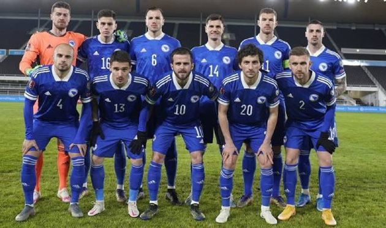
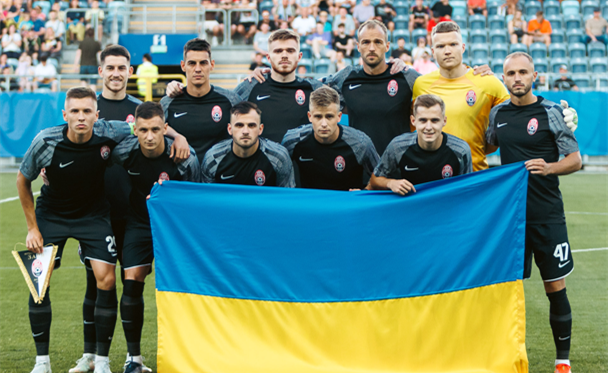
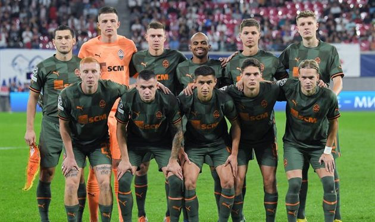
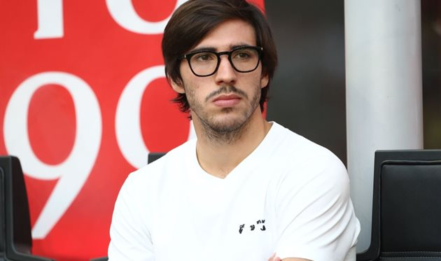

Підрозділи
- УЄФА не заперечує проведенню спарингу між збірними Боснії та Герцеговини та Росії
- Стало відомо, в яких складах Рух і Зоря зіграють у матчі 4-го туру УПЛ
- Шахтар представив третій комплект форми на сезон-2022/23
- Тоналі та Мілан продовжать контракт до 2027 року
УЄФА не заперечує проведенню спарингу між збірними Боснії та Герцеговини та Росії в Санкт-Петербурзі
Сьогодні Футбольний союз Боснії і Герцеговини оголосив про прийняття пропозиції від російського футбольного союзу. 19 листопада 2022 року збірні БіГ і держави-терориста проведуть товариський матч у російському Санкт-Петербузі.
Як з'ясувалось, УЄФА не бачить в цьому матчі жодних проблем, попри санкції проти росії. У відповідь на офіційний запит Футбольної Асоціації Боснії та Герцеговини представники пояснили, що товариські зустрічі не відбуваються під егідою спілки та не входять у сферу її відповідальності. Тож на національні збірні не розповсюджуються обмеження, які були застосовані стосовно росії під час виключення країни зі змагань УЄФА.
"Хотіли б підтвердити, що УЄФА не заперечує проти того, щоб ФА Боснії та Герцеговини зіграла товариський матч проти російського футбольного союзу (рфс) на території рф", — йдеться в офіційній відповіді УЄФА.
Зазначимо, що президентом боснійського футбольного союзу є племінник проросійського боснійського політика сербського походження Мілорада Додіка — Віко Зелькович.
Стало відомо, в яких складах Рух і Зоря зіграють у матчі 4-го туру УПЛ
Стали відомі стартові склади на матч третього туру УПЛ між львівським Рухом і луганською Зорею. Гра пройде у п'ятницю, 9 вересня, і розпочнеться о 17:00.
Відзначимо, що луганці ще не втрачали очок у нинішньому сезоні, здобувши три перемоги. Наразі команда Патріка ван Леувена одноосібно лідирує в УПЛ.
Щодо Руху, то "жовто-чорні" з нулем очок навпаки перебувають на останній сходинці у таблиці.
Шахтар представив третій комплект форми на сезон-2022/23
Донецький Шахтар у своїх соціальних мережах показав новий третій комплект форми на сезон-2022/23.
Форма виконана в білому кольорі з двома вертикальними сірими смугами. Партнер та виробник форми — компанія Puma.
Повідомляється, що перший поєдинок у третій формі Шахтар проведе проти одеського Чорноморця.
Тоналі та Мілан продовжать контракт до 2027 року
Півзахисник Мілана Сандро Тоналі продовжить контракт з клубом незабаром. Про це повідомив Нікола Скіра.
За інформацією інсайдера, нова угода з футболістом буде діяти до літа 2027 року. Зарплата футболіста складатиме 2,8 млн євро за сезон.
Діючий контракт Тоналі із Міланом розрахований до літа 2026 року. Ін перейшов у клуб у 2021 році з Брешії.
У минулому сезоні 22-річний футболіст награв 36 поєдинків у Серії А. Цього сезону зіграв вже чотири матчі.